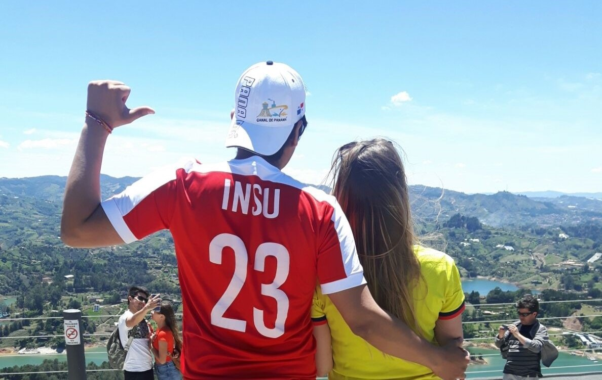

About me

My name is Andrés Felipe Insuasty Ch. (Please call me: Insu),
I am from Cali, Colombia. Capital of salsa dancing 💃, full of tastes in its food, beauty of the people and great parties or festivals .
On 2022 I got married in Pasto, Colombia with Klaudia from Poland, On 23rd of September 2022, I turned 32 years in Bogotá. Same year, on November, I will be the father of Oliver.
Check my resume for professional information
PROJECTS 📖
All would be uploaded to my GitHub
HOBBIES 😎
Some fun facts about me:
I used to practice Karate , Soccer .
I love biking and jogging.
Love dancing Salsa
Learning to take pictures Check my Instagram 📷
Some cooking recipies explained by me:
- Travelling a lot around the world✈️🚄
Thanks for reading!